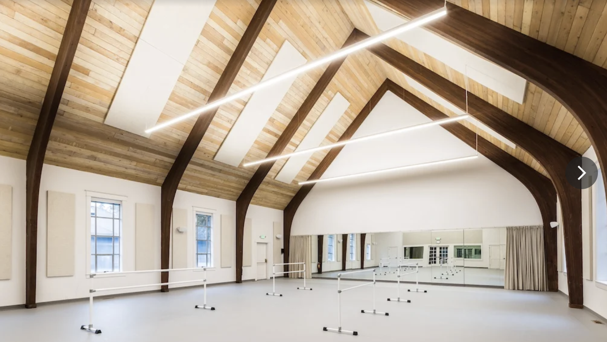
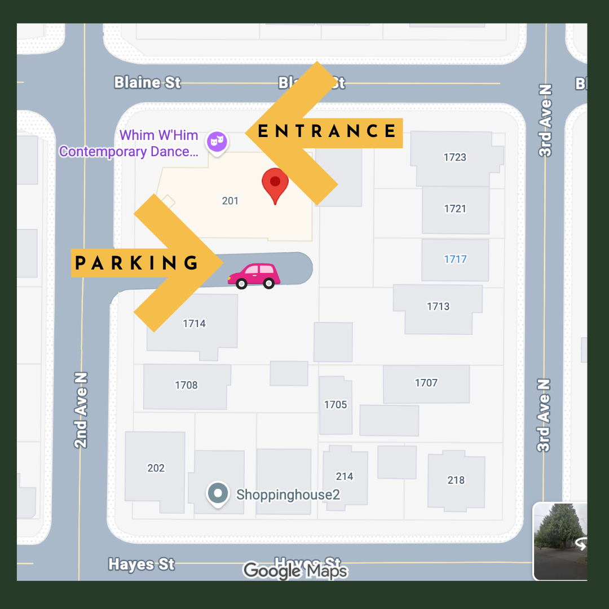
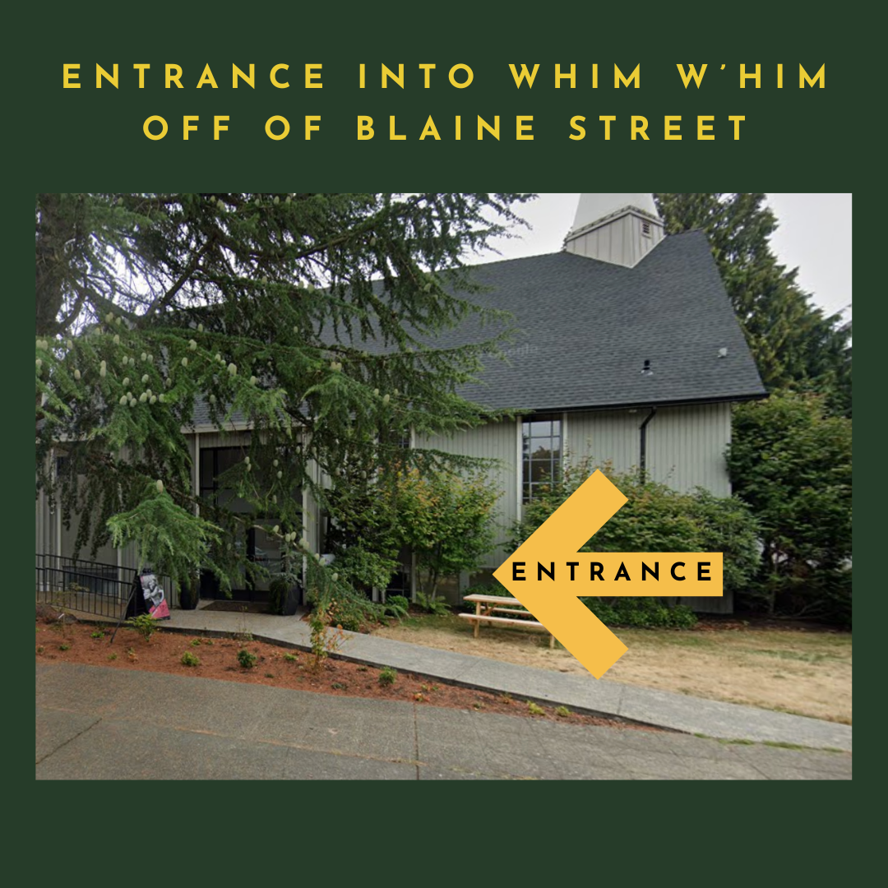
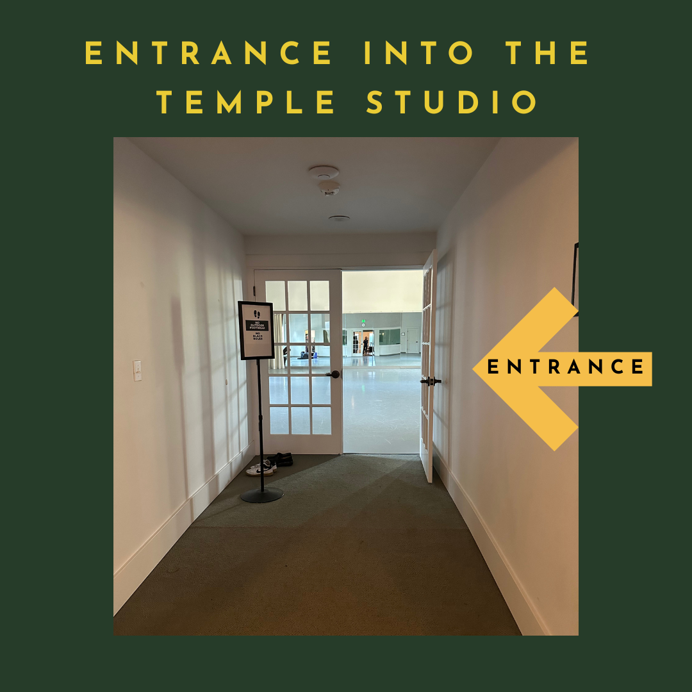

Address
1716 2nd Ave N, Seattle, WA 98109Get directions →
Parking
Parking lot next to the adjacent churchAdditional street parking nearby - arrive a few minutes early if it's your first time.
Transit
The studio is located along the 4 and 13 bus lines.For more transit options, Get directions →
Door
Opens 10 minutes before classLocks 2 minutes after class begins.
Getting to the studio



When you arrive
- Arrive 10 minutes early - the door locks 2 minutes after class begins.
- Remove shoes at the entrance before entering the studio.
- Please silence your phone and fitness watch, or leave them in your bag.
- If you arrive early, quiet conversations are welcome. We'll begin class on time, so we invite you to settle in a few minutes before we start.
- Listen to your body. If you feel overwhelmed or need rest, you're always welcome to lie down on your mat.
- If you need to step out, that's okay. We just ask that you move in and out of the space quietly.